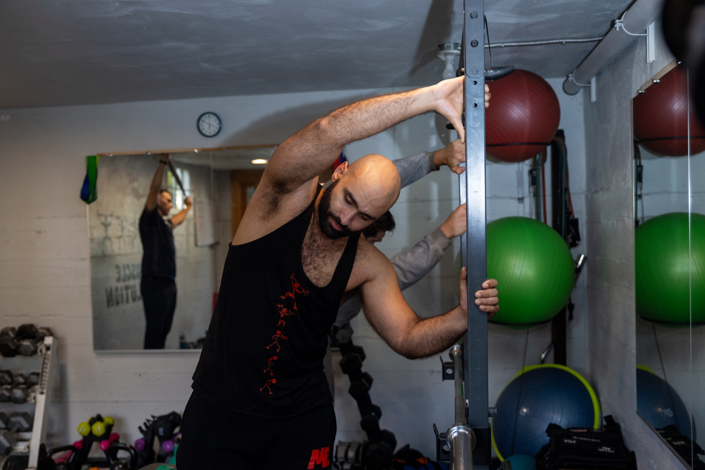

I started playing soccer at the age of five and eventually joined the Sounders Academy during my last year of high school. While in high school, I trained with kettlebells and calisthenics, which sparked my early interest in strength and functional training.
In college, I played Division 1 soccer at Elon University and began focusing on bodybuilding-style training, which further developed my understanding of strength, hypertrophy, and progressive programming.
After a few years, I decided to leave college to fully dedicate myself to building a career around personal training. My journey through competitive sports and diverse strength training methods has shaped how I work with clients today.
I bring the lessons I learned on the field and in the gym — discipline, body awareness, and intentional movement — into every session, helping clients of all ages build strength, confidence, and capability in their own lives.
My training philosophy is centered on building muscle and strength while developing a strong mind-to-muscle connection. Strength training isn't just about lifting heavier weights — it's about learning how to move with control, intention, and good mechanics.
When you understand how your body moves and how to engage the right muscles, training becomes safer, more effective, and more sustainable. This approach helps clients move better, feel more confident in their bodies, reduce injury risk, and build strength that carries over into everyday life at any age.
From children learning their first movements to adults in their 70s and 80s maintaining independence — everyone deserves to feel strong and capable.
Work With Me